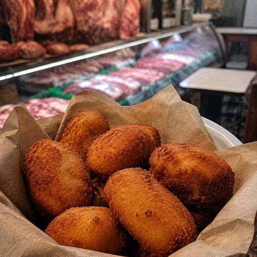
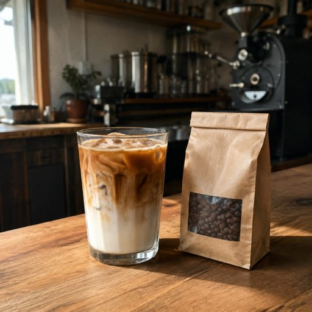
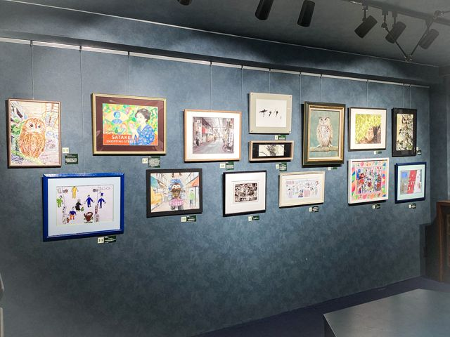

今日も一日、
がんばりましょう。
佐竹商店街は、明治31年から128年。
お店のSNSをつなぐと、投稿が自動でここに流れます。お店のSNSを登録する →



出しそびれると損をするものだけ。横にスライドできます。
読んだら「見ました」を押してください。隣の店に回す代わりです。
テーマは「佐竹のイメージ・くらし・歴史・未来」。入賞作はアーケードに1年間飾られます。応募用紙は組合事務所にもあります。
10月発行分の登録がはじまりました。登録は無料。前回は商店街の28店が参加しています。
朝9時〜夕方5時、アーケード北側の入口付近。歩く方は通れます。断水はありません。搬入の車は南側からお回りください。
組合事務所にて。出店したいお店はこの日までにお申し込みください。昨年のガラポン抽選会は長い列ができました。
53のお店＋組合事務所。タップすると詳しい案内が出ます。
| 日 | 月 | 火 | 水 | 木 | 金 | 土 |
|---|---|---|---|---|---|---|
| 1 | 2 | 3 | 4 | 5 | ||
| 6 | 7 | 8 | 9 | 10 | 11 | 12 |
| 13 | 14 | 15 | 16 | 17 | 18 | 19 |
| 20 | 21 | 22 | 23 | 24 | 25 | 26 |
| 27 | 28 | 29 | 30 |
10月はふくろう祭り。同じ日に町会のフリーマーケットもあります。日どりは実行委員会のあとにお知らせします。
困ったときは、ここから。ボタンでそのまま電話がかかります。